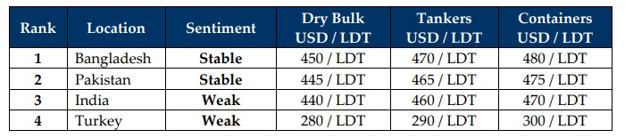

inWeekly Demolition Reports24/03/2025

This week’s news was abuzz surrounding the two OFAC sanctioned VLCCs that recently arrived OPL Chattogram and are now stuck afterundoubtedly risky transactions that have resulted in several failed onward resales to various Bangladeshi recyclers from the respective cash buyer, as both vessels have yet to receive their respective NOCs (No Objection Certificates) to permit their entry into port limits for recycling, which themselves need a local MoA prior to its issuance. As the ARTEMIS III and ITAUGUA lie stranded outside, even the Bangladesh Ship Breakers and Recyclers Association (BSBRA) as well as local L/C transacting banks are reportedly unwilling to negotiate on tonnage that is in blatant violation of U.S. / international laws. It will therefore be interesting to see what will happen to these vessels and their respective cash buyers who are now stuck with very expensive assets that have no foreseeable transactional future in sight.
India is similarly taking a restricted approach on such vessels despite previous few deals having reportedly slipped through the cracks on the back of alternate / non-USD payment arrangements. These could likely also come under the microscope even more given that the U.S. State Department has reportedly sanctioned several entities involved in these sales, including even the Oil Minister of Iran. As the spotlight remains squarely on the ship recycling markets over recent times with several OFAC listed / sanctioned / dark fleet vessels still making the rounds to / from cash buyers who seem unabashedly willing to skirt international regulations for the sake of a quick buck, may soon come under fiery investigations from U.S. authorities under the current Trump administration that want to ensure no escape routes or future transmission of funds to / from such transactions occur.
How the future of recycling the world’s dark fleet unfolds in this post-sanction friendly, trade war rollercoaster world of 2025 remains to be seen. For now, it does seem as though ship recycling markets maybe heading for a firmer Q2 as the slowing supply of candidates following a recent resurgence in freight rates (particularly in the dry bulk sectors with a number of Panamax bulkers sold for recycling in January) may drive demand (and hopefully vessel pricing) due North. And while charter rates jump, oil remains anemic overall as it ended the week at USD 68.30 / barrel, while ship recycling nation currencies (except in India) recorded noteworthy declines against the U.S. Dollar, and respective local steel prices continue to record jitters keeping sentiments in check despite Indian and Pakistan’s economies registering improvements / stability. Bangladesh on the other hand continues to have even more problems with domestic violence than the revival of its economy and Turkey at the far end continues to collapse under the weight of U.S. Dollar in addition to a fresh outpouring of political protests that gripped Istanbul after the arrest of its mayor, the leading opponent against President Erdogan in the upcoming elections.
Overall, with so much backlogged tonnage, it is expected that the ship recycling markets will get busier heading into the second half of this year, especially if tonnage supply gets a boost after a likely April calm. And with the Hong Kong Conventions (HKC) entry into force on 26th June, there is still concern regarding the current upgrade timeline to be undertaken by the various yards in Bangladesh and Pakistan, whilst India already announces its intended documentary requirements for tendering NOR from July, which could be finetuned as we get closer to the launch date.
For Week 12 of 2025, GMS Market Rankings / vessel indications are as below.

📄 Download PDF: Ship-recycling-market-insight-Week-12-03-21-2025-USDN_UANI_Lists_OFAC_Sanctions.pdfSource: GMS,Inc.https://www.gmsinc.net/gms_new/index.php/web